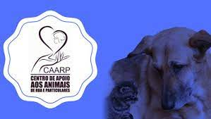
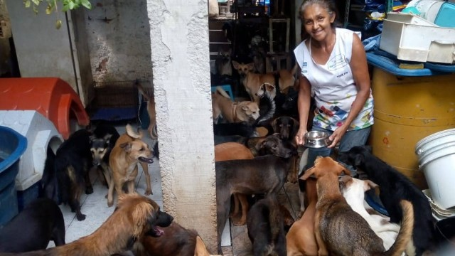
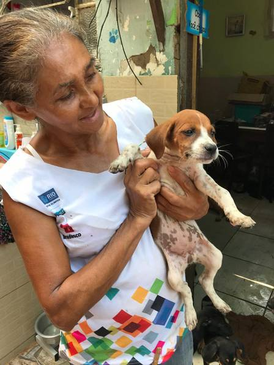
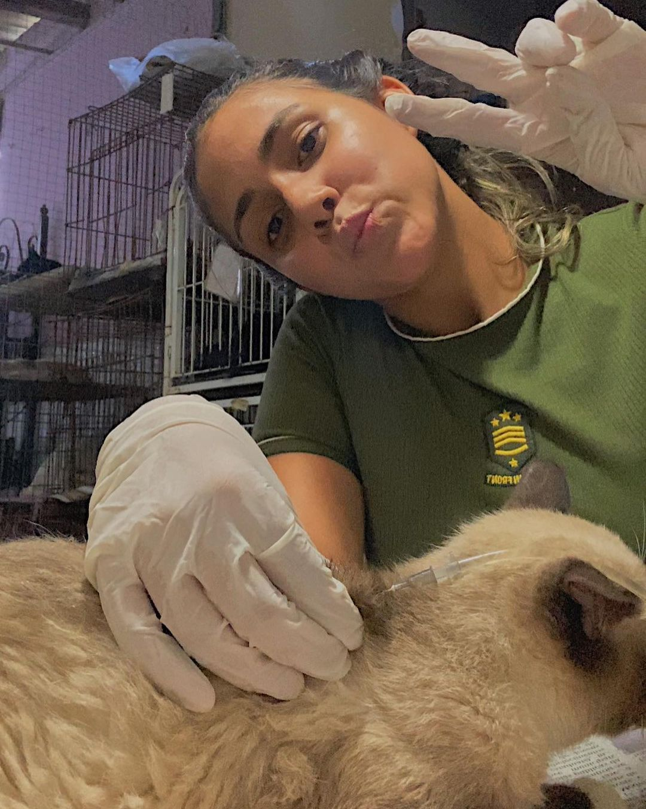
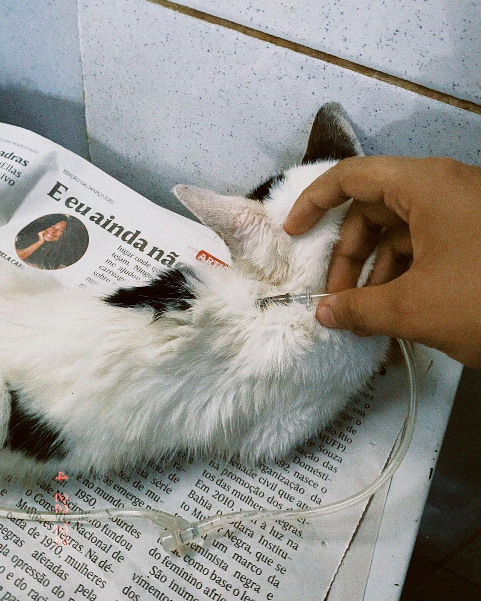

Centro De Apoio Aos Animais De Rua E Particulares

Quem é o CAARP?
Centro de apoio aos animais de rua e particulares ou CAARP, é um abrigo com mais de 300 animais, entre cães e gatos. Tania Maria, protetora e fundadora da ong conta que, no começo, relutou um pouco ao “chamado” de protetora. Sabia que o caminho
não seria fácil. Desde criança, Tânia ajudava os bichinhos sem lar, mas efetivou seu trabalho no ano de 2000, quando começou a orientar as pessoas e a levar cachorros e gatos para castração. Ao longo desses 21 anos atuando, o número de animais
abandonados na Penha e arredores foi diminuindo consideravelmente. “Era comum encontrá-los em lixeiras, jogados por ai, com doenças. Hoje é mais difícil ver essas situações na Penha e eu sei que isso é resultado do trabalho que fazemos.”

Como o CAARP se mantém?
Contando exclusivamente com ajuda de doações, seja de dinheiro arrecadado pelo seu perfil de instagram, vaquinhas online, de rações, medicamentos e vendas de seu pequeno bazar, é como ela consegue manter mais de 300 animais.
Quem é Tania Maria?
Tania Maria, protetora e fundadora da ong conta que, no começo, relutou um pouco ao “chamado” de protetora. Sabia que o caminho não seria fácil. Desde criança, Tânia ajudava os bichinhos sem lar, mas efetivou seu trabalho no ano de 2000, quando
começou a orientar as pessoas e a levar cachorros e gatos para castração. Ao longo desses 21 anos atuando, o número de animais abandonados na Penha e arredores foi diminuindo consideravelmente. “Era comum encontrá-los em lixeiras, jogados
por ai, com doenças. Hoje é mais difícil ver essas situações na Penha e eu sei que isso é resultado do trabalho que fazemos.”

Minha história com o CAARP
Meu envolvimento com a ONG começou quando eu decidi começar um curso de auxiliar de veterinário por influencia da minha cunhada; E nesse curso, estavam oferencendo uma vaga de estágio, para eu conseguir colocar em prática o que eu estava aprendendo.
Pensei bastante, pois, ter animais em sua responsabilidade é um assunto sério.. porém aceitei! Comecei sozinha, aprendendo com os erros e acertos, e se apaixonando cada vez mais nessa profissão! Hoje sou monitora de novas estagiárias, tenho
funções mais sérias e a oportunidade de ensinar tudo o que eu sei.

